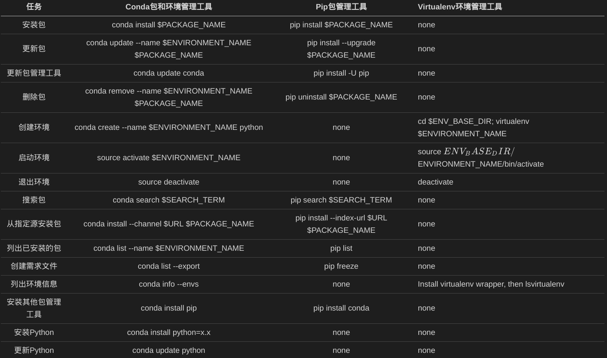

Virtualenv简易教程
virtualenv是一个创建隔离python环境的工具，主要用于解决包冲突问题。
安装方法
1 | sudo pip3 install virtualenv -i https://mirrors.aliyun.com/pypi/simple/ |
使用方法
创建项目的虚拟环境
1 | $ cd my_project_folder |
执行上述命令后，将生成一个与虚拟环境同名的文件夹，包含 Python 可执行文件和 pip 库的拷贝，可用于安装其他包。
但是默认情况下，虚拟环境中不会包含也无法使用系统环境的global site-packages。比如系统环境里安装了 requests 模块，在虚拟环境里import requests会提示ImportError。如果想使用系统环境的第三方软件包，可以在创建虚拟环境时使用参数–system-site-packages。如下所示：
1 | virtualenv --system-site-packages venv |
此外可以指定虚拟环境所使用的 Python 版本，但前提是系统中已经安装了该版本：
1 | virtualenv -p /usr/bin/python2.7 venv |
使用虚拟环境
启动虚拟环境：
1 | cd venv |
退出虚拟环境：
1 | deactivate |
virtualenvwrapper
virtualenvwrapper是virtualenv 的扩展工具，提供了一系列命令行命令，可以方便地创建、删除、复制、切换不同的虚拟环境。同时，使用该扩展后，所有虚拟环境都会被放置在同一个目录下。
安装方法
1 | pip3 install virtualenvwrapper |
环境配置
在$home/.bashrc文件中添加如下几行代码：
1 | # bash -f file检测文件是否是普通文件（既不是目录，也不是设备文件），如果是，则返回 true |
使用方法
mkvirtualenv 也可以使用 virtualenv 的参数，比如 –python 来指定 Python 版本。
1 | mkvirtualenv venv # 创建虚拟环境，虚拟环境目录都在 WORKON_HOME 里 |
conda vs. pip vs. virtualenv
Conda是一个开源包管理系统和环境管理系统，用于安装多个版本的软件包及其依赖关系，并在它们之间轻松切换。 它适用于Linux，OS X和Windows，是为Python程序创建的，但可以打包和分发任何软件。
Pip是一个以Python计算机程序语言写成的软件包管理系统，用于安装和管理软件包。
它们直接的区别如下：

pip使用方法
1 | # 导出python安装包环境 |
参考文献
- 最全的Python虚拟环境使用方法,by Stevent.
- Pipenv：新一代Python项目环境与依赖管理工具,by 李辉.
- Python 修改 pip 源为国内源,by 花晓星辰.